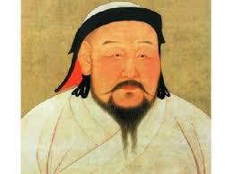

( 1162. április 16. – 1227. augusztus 18 )

Őaz első mongol nagykán (császár), a világtörténelem egyik legnagyobb hódítója.
Dzsingisz egyesítette a mongol törzseket és megalapította a Mongol Birodalmat. Ő és utódai elfoglalták Eurázsia nagy részét,
beleértve Kínát, Oroszországot, Perzsiát és Kelet-Európát is. Nyugaton Magyarországig jutottak, a Közel-Keleten csak az
egyiptomiaknak sikerült megállítaniuk csapataikat. Ez volt a világtörténelem legnagyobb összefüggő területű birodalma.
Dzsingisz kán volt Kubiláj kán,
a Jüan-dinasztia alapítójának és első császárának nagyapja.